Président de la République
Élu au suffrage universel direct pour 5 ans (2 mandats consécutifs au maximum). Il peut dissoudre le Parlement et opposer son veto aux lois.
Depuis mars 2026 : António José Seguro
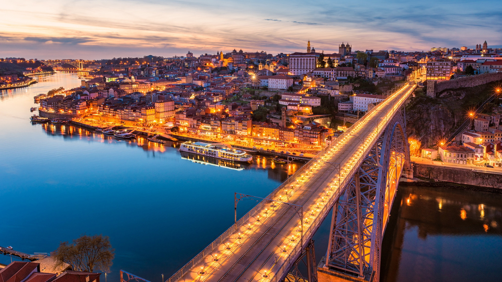
BIENVENUE AU

Une présentation du Portugal
« Un petit pays au bord de l'Atlantique, avec une grande histoire, une culture riche et beaucoup de soleil. »
« Du Minho à l'Algarve, des îles à la montagne : un peuple accueillant et fier de ses racines. »

Je suis Luís Marques.


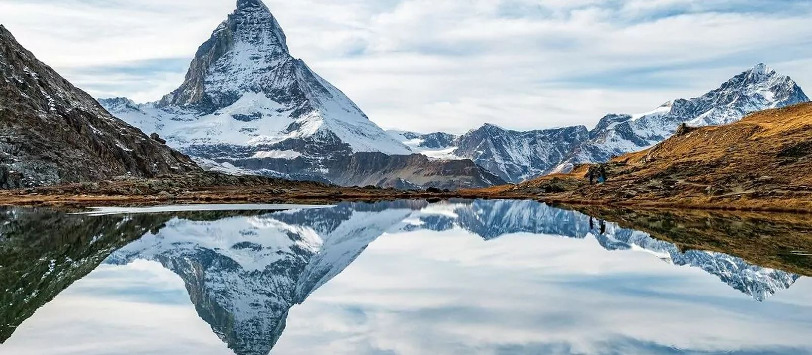
 —
—
 Suisse
Suisse
Deux pays, deux cultures, un parcours.
Le Portugal est mes racines. La Suisse est aujourd'hui le pays où je construis mon avenir.
Cette présentation est le pont entre ces deux parties de ma vie.
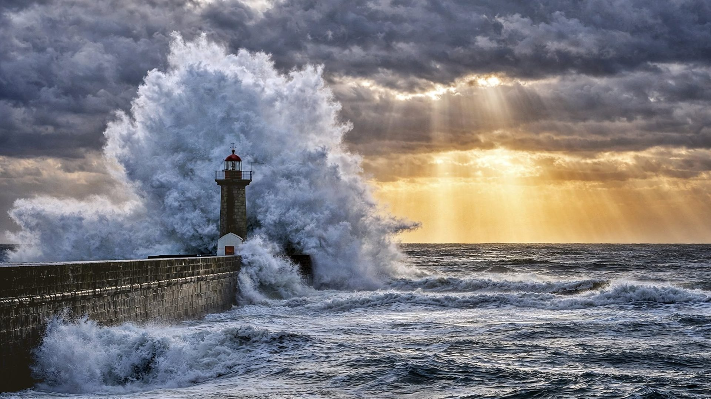
Le Portugal, entre l'Europe et l'Atlantique
Un pays à la taille modeste, mais d'une richesse géographique exceptionnelle.


Le Portugal est situé sur la péninsule Ibérique, bordé à l'est et au nord par l'Espagne et à l'ouest et au sud par l'océan Atlantique.
VOIR LA CARTE INTERACTIVE →Relief marqué, collines, vallées verdoyantes et villages traditionnels.
Grands espaces ouverts, paysages doux et lumières intenses.
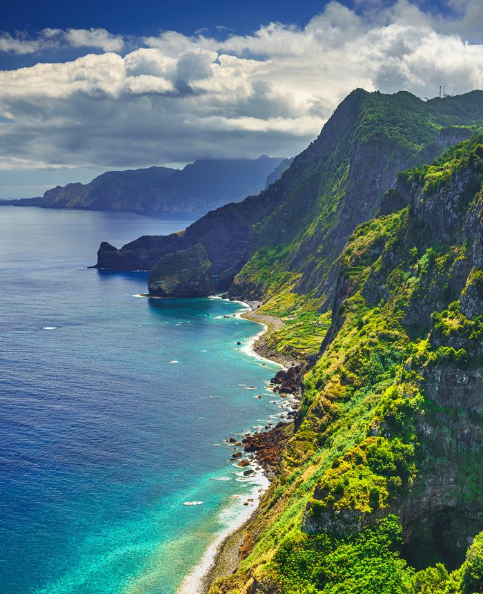
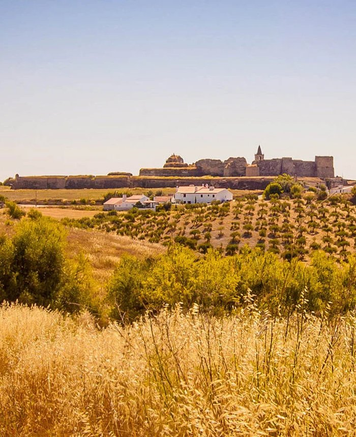
Le climat du Portugal est influencé par le courant du Nord (océan Atlantique) et par les masses d'air chaudes venant du nord de l'Afrique.
Hivers plus froids et pluvieux, étés doux.
Hivers doux et ensoleillés, étés chauds et secs.
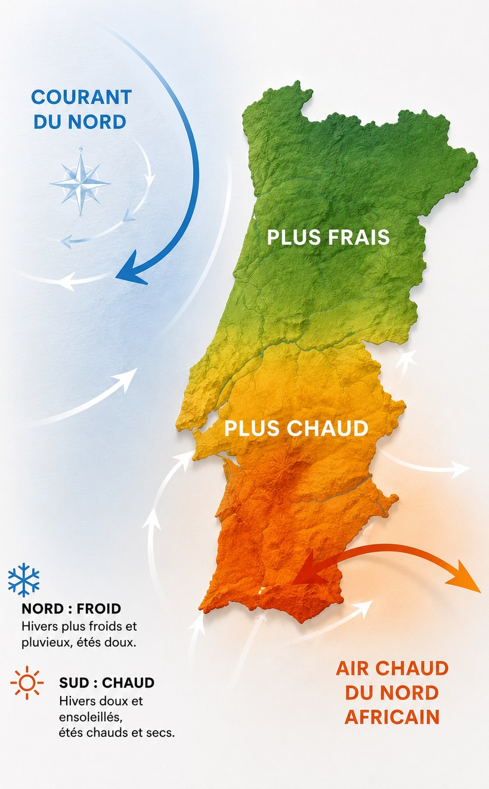
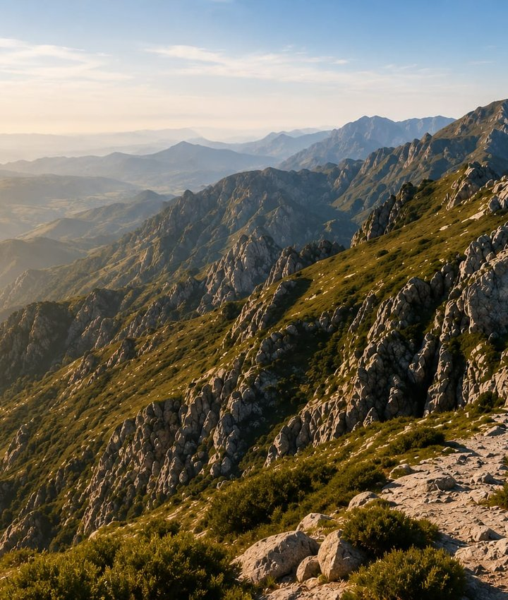
Les îles de Madère et des Açores sont d'origine volcanique. Leur paysage spectaculaire est le résultat d'éruptions vieilles de millions d'années.
Neuf îles volcaniques avec des lacs de cratère, sources chaudes et paysages uniques.
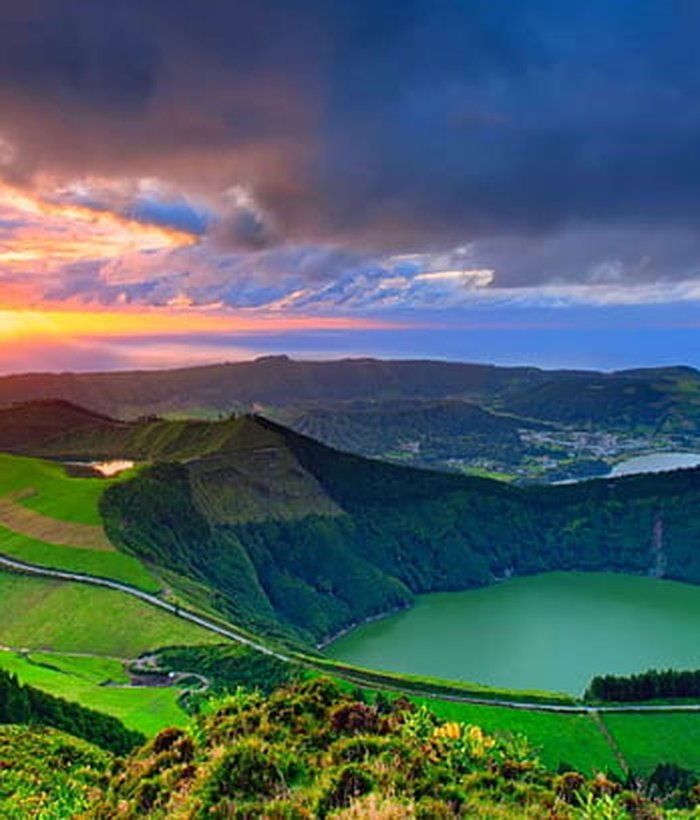
En 1957-1958, l'éruption du volcan des Capelinhos (île de Faial) a fait naître de nouvelles terres sur l'océan.
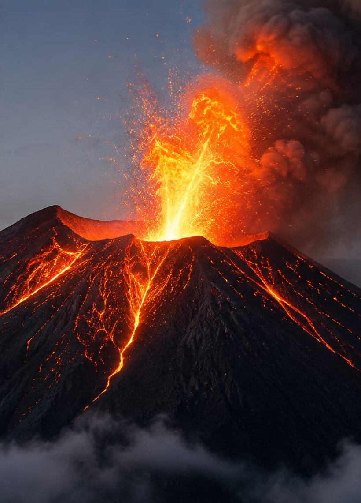
Île montagneuse d'origine volcanique, avec des falaises impressionnantes et des vallées profondes.
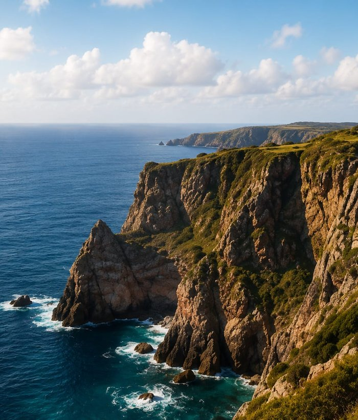
Caramulo est un village de montagne au centre du Portugal, terre du peuple lusitanien.
 Le peuple lusitanien,
Le peuple lusitanien,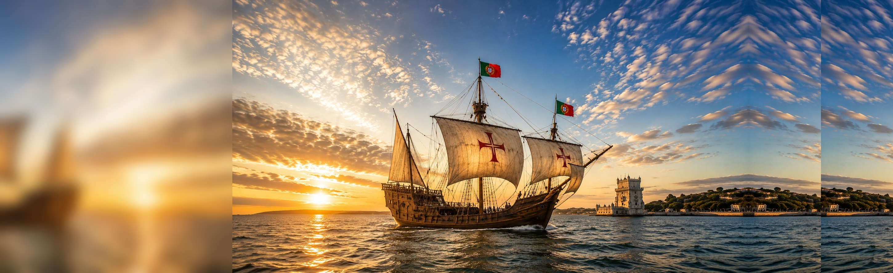
Un peuple de navigateurs,
une histoire de découvertes
Petite nation, grand destin : le Portugal a joué un rôle majeur dans l'histoire du monde, de la mer aux idées.
Le vert symbolise l'espoir de l'avenir et le rouge le sang versé pour l'indépendance.
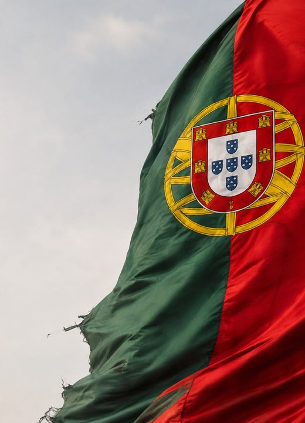
Du Comté de Portugal à la nation indépendante, une identité forgée au fil des siècles.
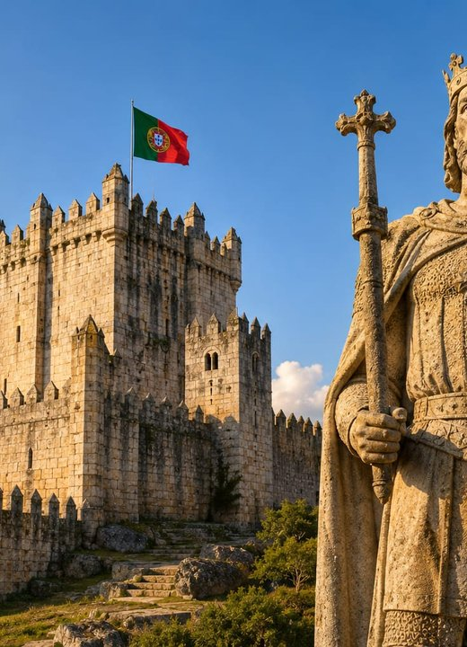
Le plus ancien traité toujours en vigueur. Alliance avec l'Angleterre qui a résisté à deux invasions de Napoléon.
En savoir plus →Popularisé en Angleterre par la reine portugaise Catherine de Bragance. Une légende raconte que le mot « Tea » viendrait de « Tem ervas aromáticas ? », écrit sur les caisses.
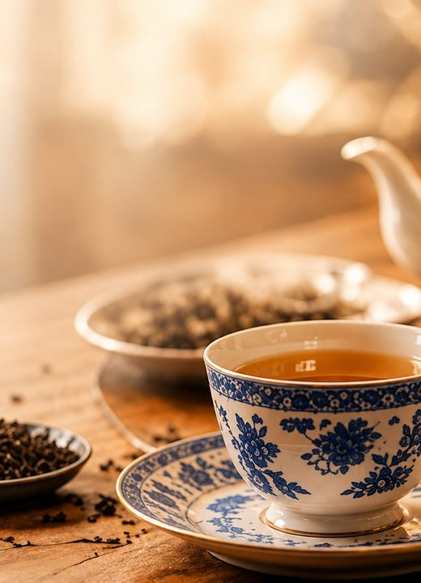
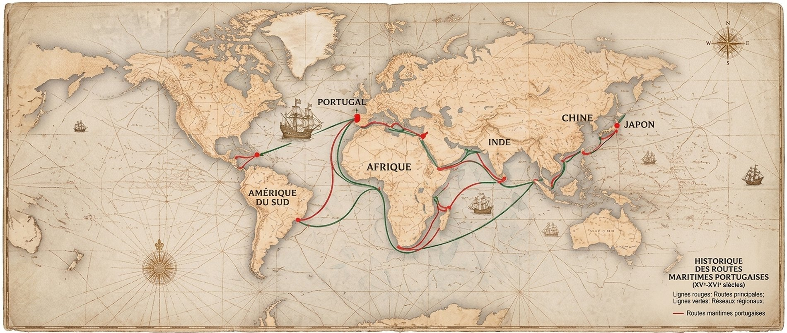
Les navigateurs portugais ont ouvert des routes commerciales vers le monde entier.
Traité de Zamora : le royaume de Portugal est reconnu. Dom Afonso Henriques devient son premier roi.
Traité d'Alcañices : les frontières du pays sont fixées, parmi les plus anciennes d'Europe.
Prise de Ceuta : début de l'expansion maritime portugaise.
Vasco de Gama atteint l'Inde par la mer en contournant l'Afrique.
Pedro Álvares Cabral arrive au Brésil.
Un tremblement de terre suivi d'un tsunami détruit Lisbonne. Le marquis de Pombal reconstruit la ville.
Fin de la monarchie : la République est proclamée le 5 octobre.
Révolution des Œillets (25 avril) : fin de la dictature de l'Estado Novo.
Le Portugal entre dans la Communauté européenne, l'actuelle Union européenne.
L'euro remplace l'escudo dans les porte-monnaie.
Une république démocratique au cœur de l'Europe
Depuis la Révolution des Œillets de 1974, le Portugal est une démocratie stable, fondée sur la Constitution de 1976.
Le Portugal est une république semi-présidentielle : le pouvoir est partagé entre quatre organes de souveraineté.
Élu au suffrage universel direct pour 5 ans (2 mandats consécutifs au maximum). Il peut dissoudre le Parlement et opposer son veto aux lois.
Depuis mars 2026 : António José Seguro
230 députés élus pour 4 ans à la proportionnelle. Elle vote les lois et le budget, et contrôle le gouvernement.
Siège : palais de São Bento, Lisbonne
Dirigé par le Premier ministre, nommé par le Président selon les résultats des élections. Il est responsable devant le Parlement.
Premier ministre : Luís Montenegro
Indépendants des autres pouvoirs. Le Tribunal constitutionnel veille au respect de la Constitution.
Ils rendent la justice « au nom du peuple »
Le 25 avril 1974, de jeunes officiers renversent presque sans violence la dictature de l'Estado Novo, au pouvoir depuis 48 ans. Le signal ? La chanson « Grândola, Vila Morena » diffusée à la radio. La population offre des œillets rouges aux soldats, qui les glissent dans le canon de leurs fusils.
Aujourd'hui, le 25 avril est un jour férié : le « Dia da Liberdade », jour de la Liberté.
« Grândola, vila morena,
terra da fraternidade… »Zeca Afonso, 1971
Portugal
Suisse
Membre fondateur en 1949.
Membre depuis 1986. António Costa préside le Conseil européen depuis 2024.
António Guterres, ancien Premier ministre portugais, est secrétaire général de l'ONU depuis 2017.
La Communauté des pays de langue portugaise réunit 9 pays sur 4 continents.
Un peuple chaleureux, ouvert sur le monde
Famille, accueil et saudade : les Portugais sont attachés à leurs traditions et présents sur tous les continents.
Le cœur de la société. Les grands repas du dimanche réunissent souvent plusieurs générations.
Les Portugais sont réputés pour leur gentillesse et leur hospitalité envers les visiteurs.
Une « bica » à Lisbonne ou un « cimbalino » à Porto : le petit café est un rituel de chaque jour.
Pays de tradition catholique. Le sanctuaire de Fátima attire des millions de pèlerins chaque année.
Le portugais est la langue officielle de 9 pays et l'une des langues les plus parlées au monde. Au Portugal, le mirandais est aussi reconnu officiellement depuis 1999.
Saudade
Le mot que l'on ne peut pas traduire
La saudade, c'est la nostalgie douce-amère de quelqu'un ou de quelque chose que l'on aime et qui est loin. Un sentiment que connaît bien chaque Portugais vivant à l'étranger.
Environ 2 millions de personnes nées au Portugal vivent à l'étranger, sans compter leurs descendants. Les plus grandes communautés se trouvent notamment en France, en Suisse, au Royaume-Uni, en Espagne, aux États-Unis et au Brésil.
—
Environ 250 000 Portugais vivent en Suisse : l'une des plus grandes communautés étrangères du pays. J'en fais partie depuis 2013.
Fado, azulejos et saveurs de l'Atlantique
Une culture façonnée par la mer, la musique et la table, transmise de génération en génération.
Chant mélancolique accompagné de la guitare portugaise. Amália Rodrigues en est la grande voix. Patrimoine immatériel de l'UNESCO depuis 2011.
Carreaux de faïence peints, souvent bleus et blancs, qui décorent églises, gares et façades.
Style de l'époque des Découvertes, riche en motifs marins : cordages, coquillages, sphères armillaires. Exemple : le monastère des Hiéronymites.
Luís de Camões (Les Lusiades, 1572), Fernando Pessoa et José Saramago, prix Nobel de littérature 1998.
Poisson frais, huile d'olive, ail et bons produits du terroir : la cuisine portugaise se partage en famille.
La morue, plat national. On dit qu'il existe plus de 365 recettes : une pour chaque jour de l'année !
Petit flan à la crème dans une pâte feuilletée, né au monastère des Hiéronymites à Belém.
La spécialité de Porto : un sandwich généreux nappé de fromage fondu et d'une sauce épicée.
Sardines grillées, reines des fêtes populaires de juin.
Soupe au chou vert, à la pomme de terre et au chouriço.
Cochon de lait rôti, spécialité de la Bairrada, tout près de chez moi.
Vin doux de la vallée du Douro, l'une des plus anciennes régions viticoles délimitées au monde (1756).
Vin jeune et frais du Minho, au nord du pays.
Les vins rouges de la région de Viseu, ma région d'origine.
Fête nationale, en l'honneur de Camões et des communautés portugaises dans le monde.
Lisbonne fête saint Antoine : sardines grillées, musique et marches populaires dans les quartiers.
À Porto, toute la ville sort dans la rue, avec des petits marteaux en plastique et des feux d'artifice.
Une passion nationale
Le football fait vibrer tout le pays, mais le Portugal brille aussi sur les vagues, sur roulettes et sur la piste.
Né à Funchal (Madère) en 1985. Cinq Ballons d'or et meilleur buteur de l'histoire des sélections nationales.
Eusébio, Luís Figo (Ballon d'or 2000) et l'entraîneur José Mourinho ont aussi marqué l'histoire du football.
Benfica et Sporting (Lisbonne), FC Porto : trois clubs qui divisent les familles… dans la bonne humeur !
Des vagues géantes de plus de 25 mètres : des records du monde de surf y ont été établis.
L'une des plus grandes nations du hockey sur patins à roulettes, avec plus de 15 titres de champion du monde.
Carlos Lopes (1984) et Rosa Mota (1988) ont remporté l'or olympique au marathon.
Champion du monde en 2021 et double champion d'Europe.
Du Minho à l'Algarve, jusqu'au milieu de l'Atlantique
Cinq régions sur le continent et deux archipels autonomes : sept visages d'un même pays.
Région verte et montagneuse. Guimarães est considérée comme le berceau du Portugal ; la vallée du Douro et ses vignes en terrasses sont classées à l'UNESCO.
Terre de contrastes : l'université de Coimbra (1290), Aveiro et ses canaux, la Serra da Estrela… et Caramulo, mon village !
La capitale, ville aux sept collines au bord du Tage, avec ses trams jaunes, Belém et les palais romantiques de Sintra.
Vastes plaines dorées, oliviers et chênes-lièges : le Portugal produit environ la moitié du liège mondial. Évora est classée à l'UNESCO.
Plages de sable doré, falaises spectaculaires et plus de 300 jours de soleil par an.
Neuf îles volcaniques au milieu de l'Atlantique : lacs de cratère, sources chaudes et le Pico, plus haut sommet du pays.
L'« île de l'éternel printemps » : levadas, fleurs, vin de Madère… et ville natale de Cristiano Ronaldo.
Ce que le Portugal représente pour moi
Un voyage à travers un pays… et à travers mon histoire.
Caramulo, ma famille, l'air de la montagne et les repas du dimanche. C'est là que tout a commencé.
Le travail, le respect, la solidarité et le sens de l'accueil, que j'emporte partout avec moi.
Entre le Portugal et la Suisse, entre hier et demain. Fier d'être Portugais, heureux de vivre en Suisse.
« On peut quitter le Portugal, mais le Portugal ne nous quitte jamais. »— LUÍS MARQUES